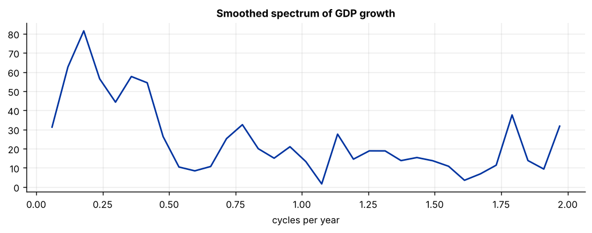
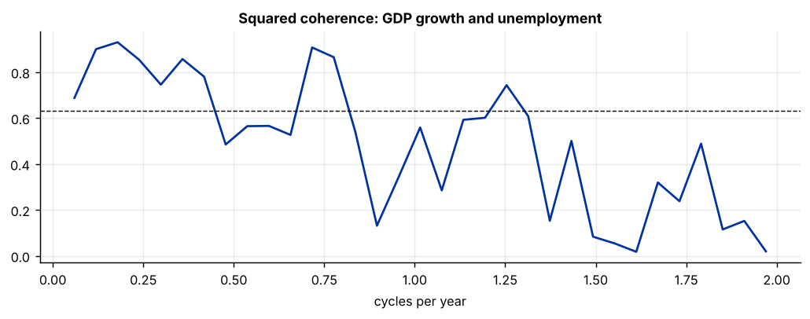

Step 1The question and the model
At which cycle lengths does GDP growth vary, and how closely do output and unemployment move together at those cycle lengths? Any stationary series can be written as a sum of cycles of different lengths. The spectral density \(f(\omega)\) is the contribution of the cycle at frequency \(\omega\) (cycles per period) to the variance:
The raw periodogram is very noisy, so we use the Welch method: split the series in overlapping segments, taper each with a window, and average the periodograms. For two series, the squared coherence
is the R-squared of the relation between them at frequency \(\omega\), and the phase of \(f_{xy}\) shows whether they move in the same direction (phase near 0) or in opposite directions (phase near \(\pm\pi\)). A frequency \(\omega\) corresponds to a period of \(2\pi/\omega\) observations, which is \(1/(\text{frequency}\times\text{periods per year})\) years.
Before you estimate anything
- Use stationary data. A trend dominates the lowest frequencies; remove it, or use growth rates.
- Choose the segment length. Long segments give sharp peaks but a noisy estimate; short ones are smoother and blur the peaks. With 200 observations, segments of one third of the sample are a reasonable compromise.
- Think of the business-cycle band. For quarterly data this is usually 6 to 32 quarters (1.5 to 8 years).
How to write it: methods sentence
We estimate spectral densities with the Welch method (67-quarter Hann segments with 50% overlap) after removing a linear trend, and measure the association between GDP growth and unemployment with the squared coherence and phase, which we summarise over the business-cycle band of 1.5 to 8 years.
Step 2Load the data
import warnings; warnings.filterwarnings("ignore")
import numpy as np, pandas as pd
import matplotlib.pyplot as plt
from scipy import signal
d = pd.read_csv("us_macro.csv"); n = len(d); ppy = 4
detr = lambda v: v - np.polyval(np.polyfit(np.arange(len(v)), v, 1), np.arange(len(v)))
g, u = detr(d["gdp_growth"].to_numpy(float)), detr(d["unemp"].to_numpy(float))
print(f"{n} quarters; GDP growth: mean {d.gdp_growth.mean():.2f}, sd {d.gdp_growth.std():.2f}; unemployment: mean {d.unemp.mean():.2f}, sd {d.unemp.std():.2f}")
print("correlation of GDP growth and unemployment:", round(np.corrcoef(d.gdp_growth, d.unemp)[0, 1], 3))202 quarters; GDP growth: mean 3.10, sd 3.52; unemployment: mean 5.89, sd 1.46 correlation of GDP growth and unemployment: -0.078
How to read it
GDP growth and the unemployment rate are negatively correlated, as Okun's law says, but the correlation at the same date is weak, since the link is between growth and the change in unemployment, which happens over several quarters. Spectral analysis shows at which cycle lengths the two series are related.
Step 3Step 1: The spectrum of GDP growth
seg = 67
fr, P = signal.welch(g, fs=1.0, nperseg=seg, window="hann", noverlap=seg // 2, detrend=False); fr, P = fr[1:], P[1:]; per = 1 / fr / ppy
top = np.argsort(P)[::-1][:5]
print(pd.DataFrame({"period (years)": per[top].round(2), "cycles per year": (fr[top] * ppy).round(3), "density": P[top].round(1), "% of power": (100 * P[top] / P.sum()).round(1)}).sort_values("density", ascending=False).to_string(index=False))
for lab, lo, hi in (("short (< 1.5 years)", 0, 1.5), ("business cycle (1.5-8 years)", 1.5, 8), ("long (> 8 years)", 8, 1e9)):
m = (per >= lo) & (per < hi); print(f"{lab}: {100 * P[m].sum() / P.sum():.1f}% of the power")
fig, ax = plt.subplots(figsize=(8, 3.2)); ax.plot(fr * ppy, P); ax.set_xlabel("cycles per year"); ax.set_title("Smoothed spectrum of GDP growth"); plt.tight_layout(); plt.show() period (years) cycles per year density % of power
5.58 0.179 81.5 9.9
8.38 0.119 62.7 7.6
2.79 0.358 57.7 7.0
4.19 0.239 56.5 6.9
2.39 0.418 54.4 6.6
short (< 1.5 years): 45.9% of the power
business cycle (1.5-8 years): 42.7% of the power
long (> 8 years): 11.4% of the power
How to read it
The spectrum has no single dominant peak: the largest, at a period of 5.6 years, carries only 10% of the power, and the next ones, at 8.4, 2.8, 4.2 and 2.4 years, carry 7% each. The variance is spread across many cycle lengths, as is typical of growth rates that are close to white noise plus a business-cycle component. 43% of the power is in the business-cycle band of 1.5 to 8 years, and 46% is at shorter periods, so a large part of quarterly GDP growth is high-frequency noise. Peaks of this size in a short sample should not be read as evidence of a regular cycle.
Step 4Step 2: How much does the spectrum depend on the segment length?
rows = []
for sg in (40, 67, 100):
f_, P_ = signal.welch(g, fs=1.0, nperseg=sg, window="hann", noverlap=sg // 2, detrend=False); f_, P_ = f_[1:], P_[1:]; p_ = 1 / f_ / ppy
m = (p_ >= 1.5) & (p_ < 8); rows.append([sg, round(float(p_[np.argmax(P_)]), 2), round(100 * P_[m].sum() / P_.sum(), 1)])
print(pd.DataFrame(rows, columns=["segment", "period of the largest peak (years)", "% power in business-cycle band"]).to_string(index=False)) segment period of the largest peak (years) % power in business-cycle band
40 5.00 38.8
67 5.58 42.7
100 5.00 42.3How to read it
With segments of 40, 67 and 100 quarters, the largest peak is at 5.0, 5.6 and 5.0 years and the share of power in the business-cycle band is 38.8%, 42.7% and 42.3%. The main statement, that about 40% of the variance is in the business-cycle band, is not sensitive to the choice. Report the segment length and show this check.
Step 5Step 3: Coherence between GDP growth and unemployment
fc, C = signal.coherence(g, u, fs=1.0, nperseg=seg, window="hann", noverlap=seg // 2)
_, Pxy = signal.csd(g, u, fs=1.0, nperseg=seg, window="hann", noverlap=seg // 2)
fc, C, ph = fc[1:], C[1:], np.angle(Pxy[1:]) / np.pi; pc = 1 / fc / ppy
K = (n - seg) // (seg - seg // 2) + 1; thr = 1 - 0.05 ** (1 / (K - 1))
rows = []
for lab, lo, hi in (("short (< 1.5 years)", 0, 1.5), ("business cycle (1.5-8 years)", 1.5, 8), ("long (> 8 years)", 8, 1e9)):
m = (pc >= lo) & (pc < hi); rows.append([lab, round(float(C[m].mean()), 3), round(float(np.median(ph[m])), 2)])
print(pd.DataFrame(rows, columns=["band", "mean squared coherence", "median phase (units of pi)"]).to_string(index=False))
print(f"\n95% significance threshold for coherence with {K} overlapping segments: {thr:.2f}")
fig, ax = plt.subplots(figsize=(8, 3.2)); ax.plot(fc * ppy, C); ax.axhline(thr, color="k", ls="--", lw=.8); ax.set_xlabel("cycles per year"); ax.set_title("Squared coherence: GDP growth and unemployment"); plt.tight_layout(); plt.show() band mean squared coherence median phase (units of pi)
short (< 1.5 years) 0.378 0.22
business cycle (1.5-8 years) 0.701 0.45
long (> 8 years) 0.794 0.50
95% significance threshold for coherence with 4 overlapping segments: 0.63
How to read it
The coherence is 0.70 in the business-cycle band, 0.79 at long periods and 0.38 at short periods. The threshold for a significant coherence at 5% with this number of segments is 0.63, so the link is significant at business-cycle and longer cycles and not at short ones. The median phase is about 0.45 in the business-cycle band (in units of π), which is close to a quarter of a cycle: the two series are not in step and not opposite, but a quarter-cycle apart, which is what you expect when one is a growth rate and the other a level that responds to accumulated growth. It also explains why their correlation at the same date is only −0.08. The relation is strong for the slow movements and weak for the quarter-to-quarter noise; it is Okun's law seen by frequency. Do not read the sign of the phase as a lead or a lag without checking the convention of the software.
Step 6What to report in the paper
Report the detrending, the window and the segment length; the share of variance by band; the coherence and phase in the band of interest with the significance threshold; and a robustness check on the segment length. Do not interpret small peaks as cycles.
How to write it: results
The spectrum of GDP growth has no dominant peak: 43% of its variance is at business-cycle periods of 1.5 to 8 years and 46% at shorter periods. GDP growth and unemployment are strongly coherent at business-cycle frequencies (squared coherence 0.70, above the 5% threshold of 0.63), with a phase of about a quarter of a cycle, but the coherence is below the threshold at periods shorter than 1.5 years (0.38).
Step 7Common mistakes
Mistakes to avoid
- Using the raw periodogram. It is very noisy; smooth it.
- Not detrending. The trend puts all the power at the lowest frequency.
- Reading every peak as a cycle. In a short sample, noise produces peaks.
- Confusing frequency and period. A period is the inverse of the frequency.
- Coherence without a significance threshold. With few segments, high coherence arises by chance.
- A segment length that is too short or too long. The first loses resolution, the second has few segments.
- Applying spectral analysis to a non-stationary series. Take growth rates or differences first.
- Reading the phase where the coherence is low. The phase is meaningless without association.